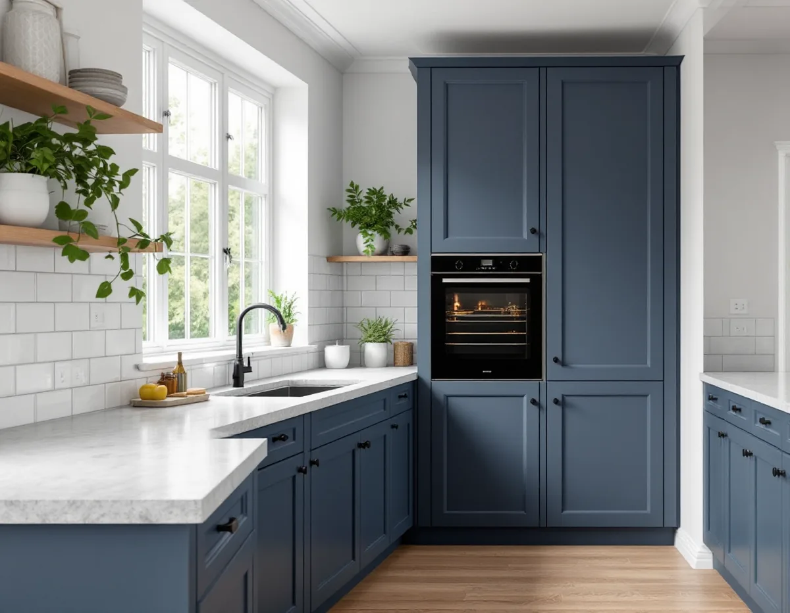
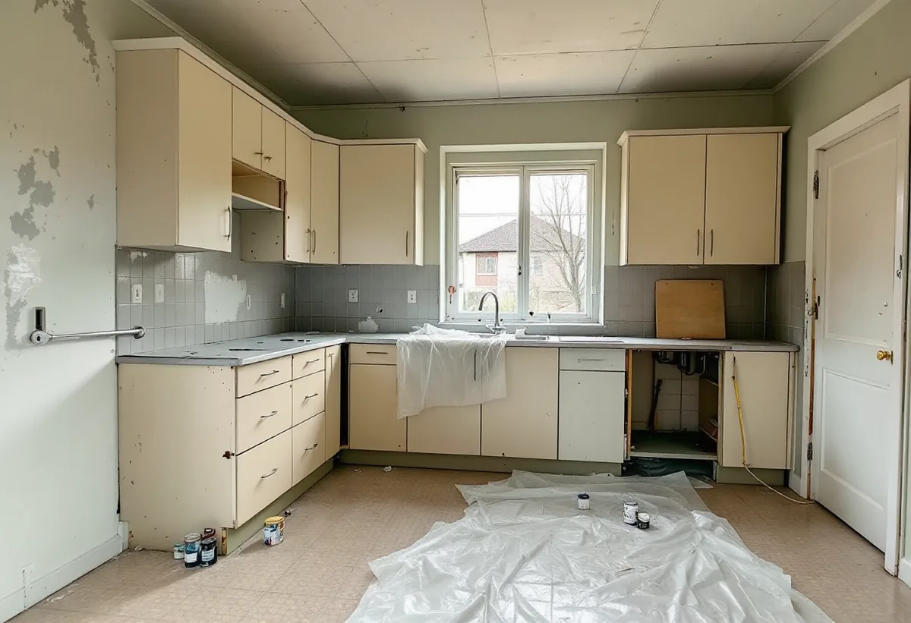

Platsbesök
Vi går igenom köket, tittar på golv, kakel och fönsterbänkar och ser var stam och kanal går.
Många villor i Spånga är äldre än de ser ut. Bakom ett kök från 1960- eller 70-talet kan det sitta material från en tid då asbest var vanligt i byggprodukter. Därför börjar en köksrenovering här ofta med ett prov. Geal Entreprenad AB gör om kök i Spånga med gratis platsbesök, skriftligt kostnadsförslag och ROT-avdraget direkt på fakturan.

Enligt artikeln Ur Hem på landets arkiv bildades AB Hem på landet 1899, och 1904 började bolaget bygga egnahemskolonin Solhem nära Spånga station på Västeråsbanan. Samma år planlades 150 tomter söder om järnvägen i kvarter med 10–12 hus i varje.
Styrelsen bestämde sig, med viss tvekan, för att bara bygga en lägenhet i varje hus för att undvika spekulationsbyggen med uthyrning. Bolagets ingenjör Gunnar Way-Matthiesen granskade ritningarna och såg till att husen följde bestämmelserna om stugstil, tegeltak och tilltalande färg. Uthusen byggdes ihop med boningshusen så att tomterna inte skulle belamras.
Vid årsskiftet 1909–1910 fanns 272 villor i Solhem. Samma år blev samhället municipalsamhälle, och 1949 inkorporerades Spånga med Stockholm.

Artikeln beskriver hur förändringen tog fart på allvar på 1960-talet. Efterfrågan på tomter ledde till att flera av de stora tomterna styckades, och många av de äldre villorna förändrades kraftigt genom om- och tillbyggnader under 1960- och 1970-talen. Av de hus som finns på bolagets tidiga ritningar och fortfarande står kvar är samtliga förändrade: panel har ersatts av eternit eller lackpanel, och de tätspröjsade fönstren har bytts.
Ett kök i en Solhemsvilla är därför ofta inte husets första, och inte heller det andra. Det som syns i dag kan vara från en ombyggnad för femtio år sedan, med golvmatta, kakel och lim från samma tid. Det är just de lagren som behöver undersökas innan något rivs. Vid besöket frågar vi därför om du vet när köket senast byggdes om, och om det finns ritningar eller kvitton från den ombyggnaden. Det ger en första bild av vilka material som kan finnas bakom skåpen.
Boverket skriver att asbest förbjöds inom byggsektorn 1982 men att stora mängder finns kvar i byggnader. Om huset är uppfört mellan 1940 och 1980 är det sannolikt att det finns asbest någonstans, och den kan också finnas i produkter från tidigare renoveringar. Bland exemplen Boverket listar finns kakel- och klinkerfix och fog, golv- och väggmattor, lim och skikt under mattor, golvmassor, fönsterbänkar, ventilationskanaler och gasspisar.
Asbest i bunden form är inte farlig, men när materialet sågas, slipas, borras eller skrapas frigörs fibrer som kan sväva i luften i många timmar. Det går sällan att se med blotta ögat, och enligt Boverket är provtagning och analys det enda säkra sättet att veta.
Visar provet asbest ska rivningen göras av ett företag med tillstånd. Arbetsmiljöverket skriver att företag behöver tillstånd för att riva eller sanera asbesthaltigt material, och att ansökan ska göras åtta veckor innan arbetet ska börja. Det påverkar tidplanen, och därför tar vi proverna tidigt.
Eftersom uthusen i Solhem byggdes ihop med boningshusen ligger det ibland ett förråd eller en gammal bod vägg i vägg med köket. Att ta ett sådant utrymme i anspråk för att göra köket större ändrar planlösningen. Enligt Stockholms stad kräver det inget bygglov, men en anmälan och ett startbesked behövs om bärande konstruktion eller brandskydd påverkas, om ventilationen ändras väsentligt eller om en ny VA-stam dras i ett nytt schakt.
Ett förråd är sällan isolerat som ett bostadsrum, så golv, väggar och tak behöver ofta byggas om innan det kan bli en del av köket. Behöver taket över den delen läggas om samtidigt finns mer under takläggare i Spånga.
Vi går igenom köket, tittar på golv, kakel och fönsterbänkar och ser var stam och kanal går.
Misstänkta material provas och analyseras innan något bearbetas.
Rivning, eventuell sanering, installationer och montering står var för sig.
Material utan asbest rivs av oss; asbesthaltigt material tas om hand av ett företag med tillstånd.
Rör, el och kanal dras, och golv och väggar byggs upp.
Skåp, bänkskiva och vitvaror monteras och vi går igenom köket med dig.
Skatteverket godkänner rotavdrag för asbestsanering när den görs i samband med byggarbete, och för att montera köksinredning och vitvaror vid en omfattande renovering. Själva provtagningen för asbest ger däremot inget avdrag.
Avdraget är 30 procent av arbetskostnaden, högst 50 000 kr per person och år och 75 000 kr tillsammans med rut. Material ingår inte. Vi drar avdraget direkt på fakturan.
Mest om proverna visar asbest och hur mycket material som då måste saneras. Därefter om köket ska byggas ut i ett angränsande utrymme, om en ny kanal behövs och hur många lager golvet har. Du får ett skriftligt kostnadsförslag efter ett gratis platsbesök.
Planering, el, VVS, fläkt och väggar.
Köksrenovering i Stockholm →Takbyte, takbesiktning och plåtarbeten.
Takläggare i Spånga →Solhem, Bromsten, Flysta och Sundby.
Takrenovering i Spånga →Trävillor och gruppbyggda radhus.
Fasadrenovering i Spånga →Massivt, lamell, fanér eller laminat.
Golvläggare i Spånga →Solhems färgskala och villorna kring stationen.
Målare i Spånga →Väggar, vindar och verandor i villastäderna.
Snickare i Spånga →